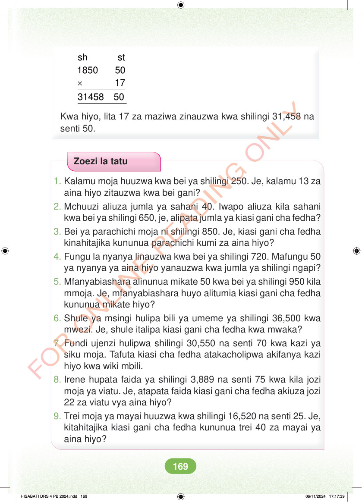

× sh st 1850 50 17 31458 50 Kwa hiyo, lita 17 za maziwa zinauzwa kwa shilingi 31,458 na senti 50. Zoezi la tatu 1. Kalamu moja huuzwa kwa bei ya shilingi 250. Je, kalamu 13 za aina hiyo zitauzwa kwa bei gani? 2. Mchuuzi aliuza jumla ya sahani 40. Iwapo aliuza kila sahani kwa bei ya shilingi 650, je, alipata jumla ya kiasi gani cha fedha? 3. Bei ya parachichi moja ni shilingi 850. Je, kiasi gani cha fedha kinahitajika kununua parachichi kumi za aina hiyo? 4. Fungu la nyanya linauzwa kwa bei ya shilingi 720. Mafungu 50 ya nyanya ya aina hiyo yanauzwa kwa jumla ya shilingi ngapi? 5. Mfanyabiashara alinunua mikate 50 kwa bei ya shilingi 950 kila mmoja. Je, mfanyabiashara huyo alitumia kiasi gani cha fedha kununua mikate hiyo? 6. Shule ya msingi hulipa bili ya umeme ya shilingi 36,500 kwa mwezi. Je, shule italipa kiasi gani cha fedha kwa mwaka? 7. Fundi ujenzi hulipwa shilingi 30,550 na senti 70 kwa kazi ya siku moja. Tafuta kiasi cha fedha atakacholipwa akifanya kazi hiyo kwa wiki mbili. 8. Irene hupata faida ya shilingi 3,889 na senti 75 kwa kila jozi moja ya viatu. Je, atapata faida kiasi gani cha fedha akiuza jozi 22 za viatu vya aina hiyo? 9. Trei moja ya mayai huuzwa kwa shilingi 16,520 na senti 25. Je, kitahitajika kiasi gani cha fedha kununua trei 40 za mayai ya aina hiyo? HISABATI DRS 4 PB 2024.indd 169 HISABATI DRS 4 PB 2024.indd 169 06/11/2024 17:17:39 06/11/2024 17:17:39